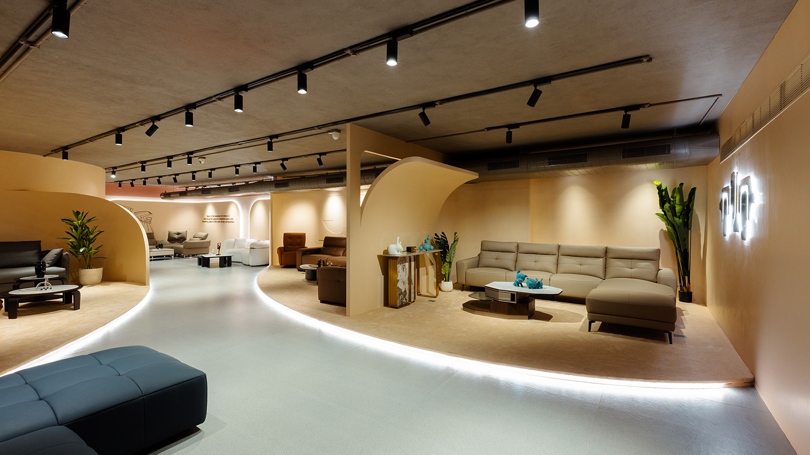
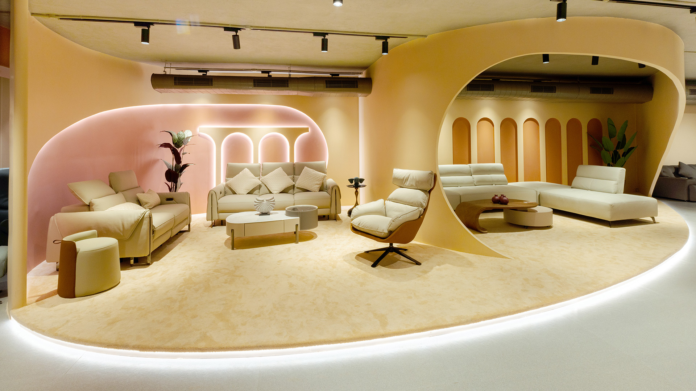

Inspired by Kirigami, the furniture store's display area transforms structural elements into sculptural forms. Walls peel and fold back, creating dynamic partitions that support adjacent spaces and enhance aesthetic appeal. This design defines spatial boundaries while inviting exploration, blending functionality and artistry.
The winding path and curving dividers create intimate areas, enhanced by a warm brown color scheme. The design balances comfort and readability, encouraging exploration and a captivating experience.